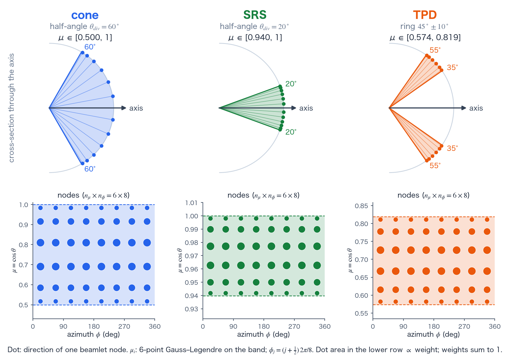
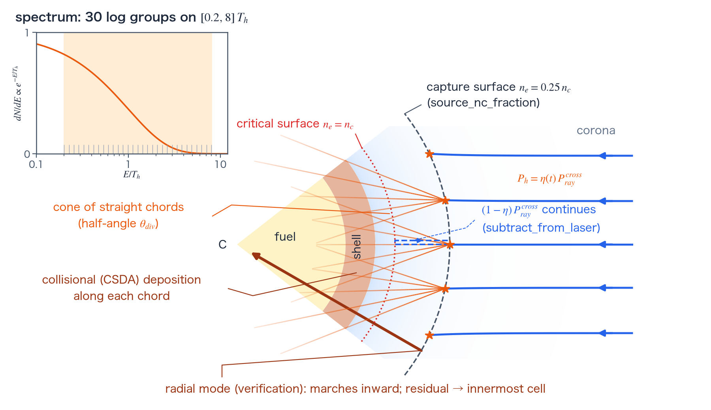

Hot electrons reference
TENRYU implements a prescribed preheat model for hot electrons driven by laser–plasma instabilities (LPI), in the style of Colaïtis et al. [1] and of LILAC, the 1D hydrocode of the Laboratory for Laser Energetics (LLE, University of Rochester, USA). The calculation is a chain of laser-power capture, an exponential spectrum, cone quadrature, transport along straight chords, collisional slowing-down, and energy deposition in the material. It is not a self-consistent solution of LPI wave growth or saturation: the hot-electron temperature is a calibration input, and the conversion efficiency η(t) is either a calibration input or the output of a reduced closure. Terms specific to this calculation are defined in the terms section.
Physical mechanism
Above intensity thresholds, laser-driven parametric instabilities — two-plasmon decay (TPD) and stimulated Raman scattering (SRS) — drive large-amplitude electron plasma waves. The instabilities occur mainly near the quarter-critical density because there a daughter electron plasma wave oscillates at about half the laser frequency, which is where the TPD and SRS frequency-matching conditions can be satisfied. The driven plasma waves trap and accelerate electrons to tens or hundreds of keV, far beyond the thermal bulk. Because their range is much longer than a thermal electron's, they penetrate the shell ahead of the shock and preheat the fuel, raising its adiabat and degrading compression. Quantifying that preheat is the purpose of this physics kernel.
The instabilities occupy kinetic, sub-wavelength scales that a radiation-hydrodynamics mesh cannot resolve, so TENRYU does not solve their wave growth or saturation. Following the philosophy of Colaïtis et al. [1] and LILAC, the conversion efficiency η(t) and hot-electron temperature \(T_h\) (the namelist's T_hot_eV) are calibration inputs, or η is supplied by the reduced closure driven by local plasma quantities. The source is placed where the generation physics occurs: at each traced ray's first crossing of \(n_e=f_s n_c\), using the power that actually survives upstream absorption to that point.
Measured hot-electron spectra are approximately exponential in energy with a single temperature. TENRYU divides that exponential into logarithmic groups whose weights and flux-averaged representative energies come from analytic moments. Because each group weight is a difference of the cumulative distribution at its two edges, the intermediate terms cancel when summed, and \(\sum_g W_g=1\) holds exactly without numerical quadrature. Direction is a deterministic uniform cone around the ray direction at the crossing point, evaluated by quadrature rather than sampling and therefore bitwise reproducible.
The transport chords are straight, with no refraction — these are roughly 100-keV electrons, not light — and v1 includes no angular scattering. Continuous slowing-down on free electrons uses relativistic kinematics and a Coulomb logarithm. The identity \(\Delta P=\dot N_g(E_{in}-E_{out})\) lets integration error move deposition only between neighboring cells, never create or destroy group power. All hot-electron power ends either deposited in a cell or escaped through the outer edge of the mesh, so the converted power \(P_h\) equals the deposited power \(P_{dep}\) plus the escaped power \(P_{esc}\). Escaped energy is counted as laser escape in the global energy ledger. On the path that coexists with cross-beam energy transfer (CBET) (the combination of cbet.geometry_mode="port_section" and eta_mode="model", which re-applies the stored per-segment optical depths in order to reproduce each ray's power attenuation and extract the transmitted power at the crossing point), the unit test test_port_section_s3 of this coupled path requires the laser power balance "deposition in cells by laser-light absorption (excluding the hot-electron deposition) + unabsorbed power + \(P_{hot}\) (the sum of the converted power \(P_h\) over all rays) = input" to close to relative \(10^{-10}\). With wavelength detuning, the power that CBET hands to the ion-acoustic wave also enters this balance.
Model scope and source
Set Laser.hot_electron.enable=True to activate the model. In the basic prescription, every traced ray moving inward creates a source at its first upward crossing of \(n_e=f_s n_c\) (its intersection with the capture surface). The default \(f_s=\)source_nc_fraction is 0.25, representing a source near the quarter-critical LPI region. In the 1D ray trace (Laser.mode="raytrace_2d"), a trace segment containing the crossing is split at the event. Inverse-bremsstrahlung (IB) absorption on the upstream part is applied first, so the source uses the power that actually reaches the capture surface rather than the power at the segment entrance. Laser.mode="radial_absorption_1d" traces no rays: it marches the whole power inward as one radial ray from the outer cells and uses the power entering the first cell whose midpoint value of \(n_e/n_c\) is at least \(f_s\); the launch position is the outer face of that cell, with \(\mu_{axis}=-1\). The 2D RZ capture still uses the power at the segment entrance.
\(P_{ray}^{cross}\) is post-upstream-processing power. On the supported CBET coexistence path, capture records come from the final post-CBET propagation, not from nominal beam power before CBET exchange. CBET and hot electrons are otherwise mutually exclusive; the sole relaxed combination is cbet.geometry_mode="port_section" with eta_mode="model", which follows this post-CBET rule.
The efficiency η(t) can be supplied in four ways. For the scalar shorthand, eta_hot gives a constant and eta_hot_table gives a time table frozen during initialization. A sources list defines up to four mechanism-resolved cone, TPD, or SRS channels, each with its own capture surface, constant or tabulated η, temperature, spectral window, and angular band. Multiple channels fire in ascending \(f_s\) order and deplete the laser sequentially. Finally, eta_mode="model" evolves η from local plasma conditions. All four are reduced prescriptions for generation; none turns this feature into a self-consistent LPI solver.
Multigroup spectrum and cone angles
The source number flux follows an exponential spectrum with temperature \(T_h\). T_hot_eV is expressed in eV, not keV.
- \(P_h=\eta P^{cross}_{ray}\) — η times the post-IB crossing power: in 1D, the segment containing the crossing is split at the crossing point and upstream IB is applied first, so the source sees crossing-point power rather than segment-entry power.
- \(T_h=\texttt{T_hot_eV}\,\mathrm{eV\_to\_erg}\) — the configured spectrum temperature is converted from eV to erg before the energy moments are evaluated.
- \(W_g\) and \(E_g\) — analytic moments built from \(\phi_1\) and \(\phi_2\), with \(u=E/T_h\) the normalized energy, \(u_{g\pm1/2}\) the group edges, and \(u_{min},u_{max}\) the window edges; the differences telescope to \(\sum_g W_g=1\), while \(E_g\) is the group's flux-averaged energy.
- Cone quadrature — Gauss–Legendre nodes in \(\mu\) times uniform nodes in \(\phi\), with direction weights summing to one.
- \(f_s=\texttt{source_nc_fraction}=0.25\) — the default quarter-critical capture surface.
subtract_from_laser— subtracts the converted power from the ray to prevent double counting: after capture, \((1-\eta)P^{cross}\) continues down the laser path.
The code places n_energy_groups logarithmic groups over \([E_{min},E_{max}]=[\texttt{E_min_over_Th}T_h,\texttt{E_max_over_Th}T_h]\). Analytic moments of the exponential give each group its power weight and flux-averaged representative energy. The defaults are 30 groups and \([0.2,8]T_h\). Power outside that window is not discarded; the in-window groups are renormalized so their weights sum to one.
With angular_model="cone", the ray direction at the crossing point is the axis of a uniform solid-angle cone with half-angle theta_div_deg. The polar cosine uses an n_mu-point Gauss–Legendre rule and the azimuth uses n_phi uniformly spaced points; all angular weights sum to one. Increasing the half-angle distributes the same source power over chords with different lengths and areal densities. The alternative radial mode marches inward at \(\mu=1\) for verification. It is not a production substitute for finite cone divergence. The angular bands of TPD and SRS channels are given in the terms section.
Terms used in this calculation
The energy that hot electrons deposit in a cell depends strongly on the radius where an electron starts, the direction in which it starts, and its energy. A 1D fluid calculation carries only radial profiles, so TENRYU divides the power carried by the rays into sources, directions, and energy groups and hands these to a transport calculation for the electrons. The words used for this division carry meanings specific to TENRYU's implementation, so they are defined here together. On this page, the energy that hot electrons give to a cell is called deposition, and the energy that enters a cell through absorption of laser light is called laser deposition.
Capture surface and source
The capture surface is the surface \(n_e=f_s n_c\) on which the electron density is a fraction \(f_s\) of the critical density \(n_c\). A ray travels inward from the outside and crosses this surface in the direction of increasing density. The point where a ray first crosses the capture surface upward is called its crossing point. At the crossing point, the fraction η of the ray power \(P_{ray}^{cross}\) moves to the hot electrons, and the ray continues with the remaining \((1-\eta)P_{ray}^{cross}\). On this page, this transfer is called capture. Capture is an operation of the model, different from the trapping of electrons by a plasma wave, the physical process that accelerates them. TENRYU does not solve trapping; it gives the captured fraction η as a calibration input or from a reduced closure (physical mechanism).
The density fraction \(f_s\) is set by source_nc_fraction in the scalar shorthand and by capture_nc_fraction in a channel (the range of both is above 0 and at most 1). The default is 0.25, the quarter-critical density; only SRS channels default to 0.18. \(f_s\) determines the power that is absorbed upstream before a ray reaches the surface and the radius from which the electrons start.
A source is the combination of position, axis direction, and power from which hot electrons start. The position is the radius \(r_s\) of the crossing point; the axis direction is the cosine \(\mu_{axis}\) of the angle between the ray direction at the crossing point and the outward radial direction (\(-1\) for a radially inward ray); and the power is \(P_h=\eta P^{cross}_{ray}\). One ray makes at most one source per channel. The transport calculation takes as its unit the sources that fell into the same bin, merged into one.
Bin
A bin is a set of sources grouped by the cell that contains the source and an interval of \(\mu_{axis}\). The bin is fixed by which of the 16 equal intervals (width 0.125) of \(\mu_{axis}\in[-1,1]\) the source falls in, and by the hydrodynamic cell that contains \(r_s\). A source outside the mesh is put into the bin of the nearest end cell. A bin with zero power is not created. For each bin, one source is made with the following quantities.
$$ P=\sum_k P_k,\qquad r_s=\frac{1}{P}\sum_k P_k\,r_{s,k},\qquad \mu_{axis}=\frac{1}{P}\sum_k P_k\,\mu_{axis,k}. $$Here \(k\) indexes the sources that fell into the bin, and \(P_k\), \(r_{s,k}\), and \(\mu_{axis,k}\) are the power, radius, and direction cosine of source \(k\). Transport starts from these mean values, so the launch point is never snapped to a cell face. Bins are processed in ascending (cell, interval) order, so the order is the same in every run.
The number of bins, 16, is a constant (kAxisBins in the code), not a namelist key, and cannot be changed. Bins decouple the cost of transport from the number of rays. A 1D beam launches 1000 rays by default (Laser.rays_per_beam), and transporting every crossing point would make the cost proportional to the number of rays. With bins, at most (number of cells) × 16 sources are transported per channel, independent of the number of rays. The price is that the rays of one bin are bundled into one mean direction, so the spread of the direction cosine survives only at a resolution of 0.125.
In 2D RZ the source direction is three-dimensional, so the bins are cut differently. Within each cell, the meridional direction \(\chi=\operatorname{atan2}(k_R,k_Z)\) is divided into 16 equal intervals of \([-\pi,\pi]\) (kChiBins in the code), and the azimuthal component \(|k_\phi|\) is divided into two classes, below 0.3 and at or above 0.3, giving 32 bins per cell. Here \(k_R\), \(k_\phi\), and \(k_Z\) are the radial, azimuthal, and axial components of the unit vector of the ray direction. The source of each bin has the power-weighted mean position and direction (the direction is normalized to a unit vector).
Electron beamlets
An electron beamlet is the bundle of electrons of one energy group that leaves one source toward one direction node of the angular band. It is not a laser beam. One source is divided into as many beamlets as the product of the direction nodes (\(n_\mu\times n_\phi\) in number, where \(n_\mu\) and \(n_\phi\) are the numbers of nodes of the angular band, set by the keys n_mu and n_phi) and the energy groups (n_energy_groups); by default \(6\times8\times30=1440\). The number is smaller when the direction nodes are fewer (a single direction for theta_div_deg=0, and \(n_\phi\) nodes for a TPD channel with tpd_delta_deg=0). The power of a beamlet is \(P\,w\,W_g\) (\(P\) is the source power, \(w\) the weight of the direction node, and \(W_g\) the weight of group \(g\)), the initial energy of one electron is the group's representative energy \(E_g\), and the number flux is \(\dot N=P\,w\,W_g/E_g\). Beamlets of the same direction node follow the same chord.
The numbers of direction nodes and energy groups set the resolution in direction and in spectrum; increasing either raises the number of beamlets, and so the cost of transport, in proportion to their product. The radial mode has a single direction and gathers the channel's whole power into the outermost source, so it has only as many beamlets as groups (30 by default). The 1D GPU implementation keeps, for every beamlet, a row of deposited power for all cells (double precision) in its workspace, so it stops when the number of beamlets × the number of cells × 8 bytes exceeds 4 GiB.
Channels and angular bands
A channel is one element of Laser.hot_electron.sources and represents one mechanism that makes hot electrons. The mechanism (mechanism) is "cone", "tpd", or "srs", and up to four channels can be given. Each channel has its own capture surface (capture_nc_fraction), conversion efficiency (eta or eta_table; with eta_mode="model" the model supplies it), temperature (T_hot_eV), spectral window, and angular band. Rays travel inward from the outside, so they pass the channels in order of increasing capture-surface density, and the depletion of the ray power is applied sequentially in ascending \(f_s\). Channels with equal \(f_s\) follow the order in which they are written in sources. The density, temperature, and angular distribution of the hot electrons differ between mechanisms; channels let these differences be given separately, as calibration inputs of each mechanism.
The scalar shorthand specifies a single cone channel without sources, through the keys directly under Laser.hot_electron (source_nc_fraction, eta_hot, eta_hot_table, T_hot_eV, n_energy_groups, E_min_over_Th, E_max_over_Th, theta_div_deg, n_mu, n_phi); the error messages use the same name. These keys cannot be combined with sources, and doing so is an error.
An angular band is the range of directions in which electrons are emitted around the axis of the source, which is the ray direction at the crossing point. It is given by the range of the cosine \(\mu\) of the polar angle from the axis and by the azimuth \(\phi\) about the axis, over which it is uniform. Directions in the band are weighted uniformly in solid angle and represented by nodes: an n_mu-point Gauss–Legendre rule in \(\mu\) and n_phi equally spaced points in \(\phi\), with weights that sum to one. The cosine \(\mu_{dir}\) between the direction of a node and the radial direction is given by the following expression.
The bands and defaults of each mechanism are given in the table. Figure A shows the bands and the nodes.
| Mechanism | Angular band (range of \(\mu\)) | Default \(f_s\) | Default \(T_h\) |
|---|---|---|---|
"cone" | \(\cos\theta_{div}\le\mu\le1\) (cone). \(\theta_{div}\) is theta_div_deg (default 60°). | 0.25 | 50 keV (T_hot_eV = 5.0e4) |
"srs" | The same expression (a narrow forward cone). The default of theta_div_deg is 20°. | 0.18 | 45 keV (4.5e4) |
"tpd" | \(\cos(\theta_c+\Delta)\le\mu\le\cos(\theta_c-\Delta)\) (ring). \(\theta_c\) is tpd_theta_deg (default 45°) and \(\Delta\) is tpd_delta_deg (default 10°). | 0.25 | 60 keV (6.0e4) |

The defaults are calibration inputs of each mechanism; the literature behind them is [2]–[4] for TPD and [5]–[7] for SRS (a table is in docs/NUMERICS.md §5.11.1 of the repository). The TPD band is a ring rather than a cone: all directions whose polar angle from the axis lies between \(\theta_c-\Delta\) and \(\theta_c+\Delta\). It equals the band obtained by averaging, over the azimuth about the axis, the two lobes that lie in the directions \(\pm\theta_c\) from the axis; a 1D calculation cannot resolve the azimuth, so this ring is used. For \(\theta_c-\Delta\le0\), the inner edge of the ring reaches the axis and the band becomes a cone of half-angle \(\theta_c+\Delta\). A cone with \(\theta_{div}=0\) has only the single direction of the axis, and a ring with \(\Delta=0\) has only the \(n_\phi\) azimuthal nodes.
The key angular_model is a choice common to all channels. "cone" transports the electrons along chords that follow the angular band above, and "radial" is a verification mode that marches only the single direction \(\mu=1\) inward from the outermost source, which collects the whole power of the channel. The mechanism name "cone" denotes a type of channel and is separate from the value of angular_model.
Chords and pericenter
A chord is the straight path of an electron that leaves a source in one direction. Unlike a laser ray (chord ray tracing), it undergoes neither refraction nor scattering. In a spherically symmetric mesh, a chord meets the spherical boundaries of the hydrodynamic cells and is divided into segments at the intersections. The path length \(ds\) of each segment and the density \(\rho\) of the cell give the areal density \(\rho\,ds\) that the electron crosses, along which the stopping is integrated.
The pericenter is the point where a chord comes closest to the center of the sphere. For a source at radius \(r_s\) and a chord whose direction has the cosine \(\mu_{dir}\) with the radial direction, the pericenter radius, which equals the distance between the chord and the center, is given by the following expression.
$$ r_{peri}=r_s\sqrt{1-\mu_{dir}^2}. $$A chord with \(\mu_{dir}<0\) (inward) travels inward to its pericenter, turns, and leaves outward. A chord with \(\mu_{dir}\ge0\) has already passed its pericenter and travels only outward from the source. The cell that contains the pericenter is counted as two segments, an inbound part and an outbound part. An electron that crosses the outer boundary is counted as escaped.
Ghost corona
The ghost corona (key Laser.lasermesh.ghost_corona) is a synthetic low-density profile outside the outermost hydrodynamic cell that only the ray trace uses. When the fluid's initial condition is a sharp solid–vacuum interface with no preplasma, laser absorption concentrates in the outermost solid cell and causes unphysical heating and numerical instability. To avoid this, a band in which the electron density falls off exponentially outward from the value of the outermost hydrodynamic cell is placed only on the LaserMesh, the grid the rays travel through (LaserMesh1D and the ray march). The density range is 0.03 to 0.99 times \(n_c\) (the defaults of ne_min_frac and ne_max_frac), and the hydrodynamic density, temperature, and charge state are not changed. Only the 1D_SPH LaserMesh uses it, and it is disabled by default (enabled=False).
For hot electrons, when the capture-surface value \(f_s\) lies within the density range of the ghost corona, the crossing point lies inside the ghost corona, that is, outside the hydrodynamic mesh. This source is put into the bin of the outermost cell, and its count and power are reported in a warning.
Straight-line transport and deposition

The whole path from generation to deposition is shown in Figure B. Transport paths are straight chords without refraction or angular scattering. In spherical geometry, analytic intersections with shell faces produce inbound, pericenter (defined in the terms section), and outbound segments. A source inside a cell starts with the exact partial segment to the first face. Within each cell, \(n_e,T_e,\rho\) are held constant while an adaptive fourth-order Runge–Kutta (RK4) integration advances free-electron stopping in the continuous slowing-down approximation (CSDA), using relativistic velocity and a Coulomb logarithm.
$$ \Delta P_{i,g}=\dot N_g\left(E_{in}-E_{out}\right). $$Bookkeeping always uses the number flux times the entry-to-exit energy loss. Integration error can therefore move deposition between neighboring cells, but it cannot change total group power. Once the energy of an electron falls to the thermalization floor \(\max(2T_e,\,10^{-3}T_h)\) (\(T_e\) is the electron temperature of the cell), the remaining energy is deposited locally, and power leaving the outer boundary is counted as escaped. inner_bc="deposit_residual" applies only to radial mode: residual energy reaching the inner boundary is placed in the innermost non-void cell. The "escape" alternative records it as escaped. Cone chords turn at their pericenters and continue outward, so they do not use this radial-only boundary rule.
From capture to heating, step by step
- On each traced ray, the crossing point with the capture surface is found. A crossing segment is split, upstream IB is applied first, and the crossing power is recorded. Captures in the ghost-corona band — a region outside the outermost physical cell that only the ray trace uses — are clamped to the outermost cell, counted, and reported.
- The per-ray sources are grouped into bins: pairs of the cell that contains the source and one of 16 equal intervals of \(\mu_{axis}\) (the cosine between the ray direction at the crossing point and the radial direction). Each bin retains power-weighted, continuous representatives for both \(\mu_{axis}\) and source radius \(r_s\), without snapping the launch point to a cell face.
- Each populated bin is expanded into logarithmic energy groups and the deterministic cone directions to make electron beamlets, and each beamlet carries the product of its spectral and angular weights.
- Each beamlet marches along its chord. Analytic shell intersections order inbound, pericenter, and outbound legs and retain the exact partial first segment; per-cell \(n_e,T_e,\rho\) are held constant while adaptive RK4 integrates CSDA stopping with a 2% energy-per-substep target and at most 256 substeps per cell. When the limit is reached, the remaining energy is deposited in that cell and the number of such events is reported in a warning.
- Each cell receives \(\Delta P=\dot N(E_{in}-E_{out})\). The remainder at the thermalization floor is deposited locally, outer-boundary crossings escape, and a radial-mode inner residual follows
inner_bc. - The balance of deposited and escaped power is checked, and matter is coupled. Per-cell hot-electron power is added to the laser deposition after the (optional) laser-deposition smoothing has been applied (the hot-electron deposition profile itself is not smoothed); a 2T run heats electron internal energy. The timestep limiter
"hot_electron"(the name of the constraint that fixed Δt; see timestep) bounds the next step by \(\Delta t\le f_E\min_{P_i>0}(m_i e_{e,i}/P_i)\), with \(f_E=\texttt{explicit_source_limit}\).
Laser power balance, matter coupling, and timestep
With subtract_from_laser=True, a captured ray continues with \((1-\eta)P_{ray}^{cross}\). This prevents the converted power from being counted in both thermal laser absorption and hot-electron preheat. Setting it to False is an intentional additive sensitivity mode that injects external hot-electron energy without depleting the laser; it is not the normal configuration, in which the energy balance closes. For multiple channels, a downstream channel sees the power left by upstream channels. The laser power balance closes as "input = deposition in cells (including the hot-electron deposition) + unabsorbed power + hot-electron escape + power that had no receiving cell to be placed in + power that CBET hands to the ion-acoustic wave".
Per-cell hot-electron power is added to the laser deposition after the (optional) laser-deposition smoothing has been applied. Standard source-term injection then heats electron specific internal energy in a two-temperature calculation or the single total matter energy in a one-temperature calculation. To prevent an excessive explicit-source-term energy increment in one step, the timestep limiter "hot_electron" uses the preceding step's deposited power to limit the next timestep.
Here \(m_i\) is the mass of cell \(i\) (not an ion mass) and \(e_{e,i}\) its specific electron internal energy, so \(m_ie_{e,i}\) is the cell's electron energy reservoir. This is the same construction as the burn kernel's identically named explicit_source_limit — Δt ≤ \(f_E\) × available internal energy / deposited power — differing only in the reservoir: electron energy here, electron-plus-ion internal energy there. It is a dedicated explicit-source-term guard, not another name for the laser CFL limit. The history (history channels) records, per step, the converted energy laser/hot_e_in, the deposited energy laser/hot_e_deposited (including the radial-mode inner residual laser/hot_e_residual), the escaped energy laser/hot_e_escaped (all in erg), and the balance residual laser/hot_e_conservation_resid (the largest value over the channels). The cumulative deposited and escaped energies are laser/hot_e_E_deposited_cum and laser/hot_e_E_escaped_cum. With two or more channels, it also records laser/hot_e_ch<i>_in, _deposited, and _escaped for each channel. Depletion from subtract_from_laser is also reflected in the laser power balance.
Physics-model option for η(t)
eta_mode="model" replaces constant or tabulated η with an opt-in first-order relaxation closure for TPD and SRS channels in 1D spherical geometry. Each step evaluates \(T_e\) and the density scale length \(L_n\) near the channel's evaluation surface (by default its capture surface). Illumination intensity comes from the previous step's raw capture-crossing power. The normalized indicator \(g\) (a different quantity from the index of the energy groups) is, for TPD, the threshold parameter of Simon et al. [8] (a dimensionless number that normalizes the product of laser intensity, density scale length, and wavelength by the electron temperature) divided by the threshold coefficient \(C_k\); for SRS, it is the intensity divided by \(C_k\) times the absolute threshold intensity (set by the density scale length and wavelength). For \(g\le 1\), \(\eta_{eq}=0\); for \(g>1\), the equilibrium efficiency saturates in the excess with the form \(1-e^{-a\sqrt{g-1}}\) and is capped per channel. The update uses either a fixed relaxation time or one in the style of Vu et al. [2], and an exact exponential step; when the updated channel efficiencies sum above the total-efficiency cap, they are scaled down proportionally.
Here \(\eta^n\) is the efficiency at step \(n\), \(\eta_{eq}\) the equilibrium efficiency, and \(\tau\) the relaxation time. The coefficients of the equilibrium efficiency and of the relaxation time are given by per-channel keys of sources, and their defaults depend on the mechanism (listed in the order TPD, SRS; the values Studio writes are the same).
- \(C_k\) — threshold coefficient (
threshold_multiplier; 1 and 8). - \(a\) — coefficient that sets the shape of the saturation (
shape_coefficient; 1 for both). - \(\eta_\infty\) — value that the equilibrium efficiency approaches for large \(g\) (
eta_inf; 0.01 and 0.08). - Per-channel cap —
eta_hard_cap(0.03 and 0.08). The equilibrium efficiency does not exceed it. - \(\tau\) — for TPD, \(1\,\mathrm{ps}/(0.05g+0.06)\) limited to 3–10 ps (
relaxation_model="vu2012"; the limits arerelaxation_tau_min_sandrelaxation_tau_max_s); for SRS, the constantrelaxation_tau_s(default 6 ps,relaxation_model="fixed"). Giving an SRS channel"vu2012"is an error.
The intensity measurement is one-step lagged. η starts at zero, the first step measures crossing power, and nonzero evolution begins on the following step. This option requires TPD/SRS entries in sources and subtract_from_laser=True, works only in 1D_SPH, and rejects the scalar shorthand. Although local conditions drive η, the closure does not resolve plasma waves, nonlinear LPI saturation, or kinetic electron generation.
Namelist controls
The principal Laser.hot_electron controls are listed below. The defaults are the values used when a deck does not set the key. Studio writes Laser.hot_electron only for 1D decks, and its defaults equal the values in the table; the exceptions are tpd_overlap_mode, srs_overlap_mode, illumination_metric, and common_wave_delta_theta_deg, which Studio does not handle and never writes. The channel form sources cannot be combined with the keys of the scalar shorthand.
| Key / mode | Default | Purpose |
|---|---|---|
enable | False | Enable hot-electron preheat. |
eta_hot | 0.0 | Constant efficiency for the scalar shorthand. |
eta_hot_table | absent | η(t) table frozen at initialization; overrides the constant. |
sources | absent | Mechanism-resolved cone / TPD / SRS channels with constant or tabulated η. |
eta_mode | "legacy" | How η(t) is supplied. "legacy" uses a constant or tabulated η; "model" selects the local-condition-driven TPD / SRS η(t) closure. |
source_nc_fraction | 0.25 | Capture-surface density \(n_e/n_c\) (\(f_s\)) of the scalar shorthand; channels use capture_nc_fraction. |
T_hot_eV | 5.0e4 | Exponential-spectrum temperature [eV]. |
n_energy_groups | 30 | Number of logarithmic energy groups. |
E_min_over_Th / E_max_over_Th | 0.2 / 8.0 | Multigroup spectral window \(E/T_h\). |
angular_model | "cone" | Cone transport; "radial" is for verification. |
theta_div_deg | 60.0 | Cone divergence half-angle [deg]. |
n_mu / n_phi | 6 / 8 | Polar-cosine / azimuth quadrature counts. |
subtract_from_laser | True | Sequentially subtract converted power from each ray. |
inner_bc | "deposit_residual" | Deposit radial-mode inner-boundary residual in the innermost cell. |
explicit_source_limit | 0.2 | \(f_E\) for the "hot_electron" timestep limiter. |
eta_model.eta_total_cap | 0.08 | With eta_mode="model", the cap on the sum of the channels' η (range: above 0 and at most 0.5). When the sum exceeds it, every channel is scaled down proportionally. |
eta_model.ln_filter_tau_s | 5.0e-12 | With eta_mode="model", the time constant [s] of the exponential filter applied to \(1/L_n\). |
tpd_overlap_mode | "single_beam" | With eta_mode="model", how the TPD drive intensity is obtained. "common_wave_cluster" regards beams whose polar angles about a common axis differ by at most common_wave_delta_theta_deg as a cluster that drives one electron plasma wave in common, and takes the drive from the summed intensity of that cluster. It requires Laser.port_configuration.ports and common_wave_delta_theta_deg, and acts only when Laser.cbet.geometry_mode="port_section". |
srs_overlap_mode | "per_beam_class" | How the SRS drive is obtained. This is currently the only value: the drive is taken per beam class, and the sum over all beams is not made a single drive. |
illumination_metric | "fixed" | Choice of the factor \(f_{illum}\) that multiplies the area used for the illumination intensity. "fixed" is \(f_{illum}=1\); "equivalent_area" is the fraction of the sphere that is effectively illuminated. It requires eta_mode="model" and Laser.port_configuration.ports, and acts only when Laser.cbet.geometry_mode="port_section". |
common_wave_delta_theta_deg | absent | Angular width [deg] that tpd_overlap_mode="common_wave_cluster" requires (range: above 0 and at most 90). There is no universal default; calibrate it. |
Verification and limits
- The relative residual \(|P_{dep}+P_{esc}-P_h|/P_h\), which measures how well the deposited plus escaped power equals the converted power, closes by construction in a 1D calculation with the scalar shorthand; the GXII (GEKKO XII)-derived smoke test measured at most \(7\times10^{-15}\).
- In the mechanism-channel checks (measured 2026-07-10), the GXII golden result with the feature disabled is reproduced with zero relative difference over 53/53 snapshots, and the scalar shorthand and
sources=[cone]agree over 55/55 snapshots. In the three-channel 20-ps run, each channel closed within \(1.6\times10^{-14}\), and the channels' deposited and escaped power summed to the total values within \(3\times10^{-16}\). - The planar angular-trend check (measured 2026-07-10) — a 200-cell planar slab with \(T_h\), η, and \(f_s\) held identical across all four runs, so launch angle is the only variable — places the 90% deposition depth at cells 154, 152, 144, and 142 for cone 0°, SRS 20°, cone 60°, and TPD 45°, respectively; the absorbed fractions are 0.734, 0.742, 0.805, and 0.820, in the monotone order that had been set as the expectation before the run.
- The η(t) physics-model checks exercise the relaxation update and its capture, depletion, and diagnostic wiring.
The present stopping model omits bound-electron, plasmon, and degeneracy effects, collisional angular scattering, and reflux (the return of escaped electrons to the target by sheath electric fields). It can therefore underestimate stopping and overestimate range in cold, partially ionized matter. η and \(T_h\) remain calibration-dependent: results should be interpreted as the target's preheat response to the selected generation closure, not as a first-principles prediction of LPI.
References
- A. Colaïtis et al., "Coupled Hydrodynamic Model for Laser-Plasma Interaction and Hot Electron Generation," Phys. Rev. E 92, 041101(R) (2015). doi:10.1103/PhysRevE.92.041101
- H. X. Vu et al., "Hot-Electron Production and Suprathermal Heat Flux Scaling with Laser Intensity from the Two-Plasmon-Decay Instability," Phys. Plasmas 19, 102703 (2012). doi:10.1063/1.4757978
- R. K. Follett et al., "Simulations and Measurements of Hot-Electron Generation Driven by the Multibeam Two-Plasmon-Decay Instability," Phys. Plasmas 24, 102134 (2017). doi:10.1063/1.4998934
- E. Rovere et al., "Hot Electron Scaling for Two-Plasmon Decay in ICF Plasmas," Phys. Plasmas 30, 042104 (2023). doi:10.1063/5.0128052
- M. J. Rosenberg et al., "Origins and Scaling of Hot-Electron Preheat in Ignition-Scale Direct-Drive Inertial Confinement Fusion Experiments," Phys. Rev. Lett. 120, 055001 (2018). doi:10.1103/PhysRevLett.120.055001
- M. J. Rosenberg et al., "Stimulated Raman Scattering Mechanisms and Scaling Behavior in Planar Direct-Drive Experiments at the National Ignition Facility," Phys. Plasmas 27, 042705 (2020). doi:10.1063/1.5139226
- A. A. Solodov et al., "Hot-Electron Generation at Direct-Drive Ignition-Relevant Plasma Conditions at the National Ignition Facility," Phys. Plasmas 27, 052706 (2020). doi:10.1063/1.5134044
- A. Simon, R. W. Short, E. A. Williams, and T. Dewandre, "On the Inhomogeneous Two-Plasmon Instability," Phys. Fluids 26, 3107–3118 (1983). doi:10.1063/1.864037